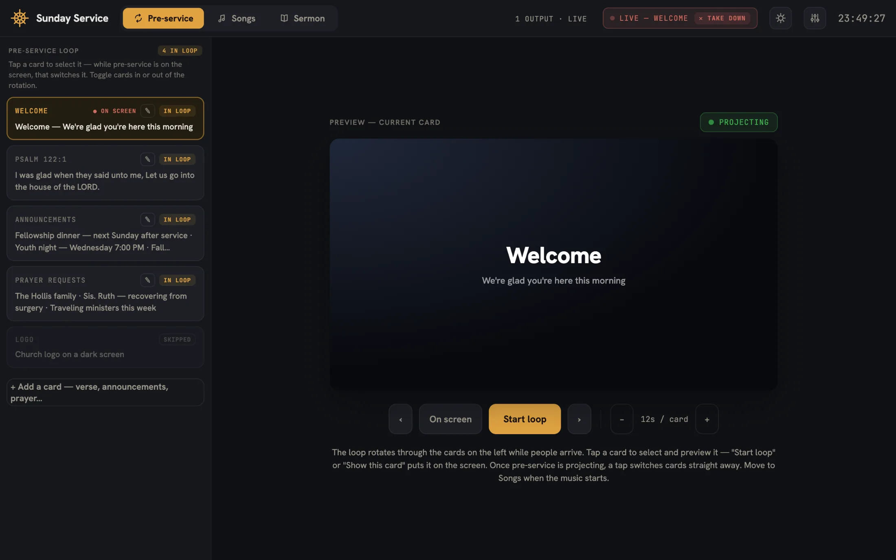

Before the service
The pre-service loop
A welcome card, a verse, the announcements, prayer requests — rotating on a dwell timer while people find their seats. Tap any card to switch to it straight away. Verse cards pull their text from the installed Bible by reference, so nobody retypes Psalm 122 into a text box.
